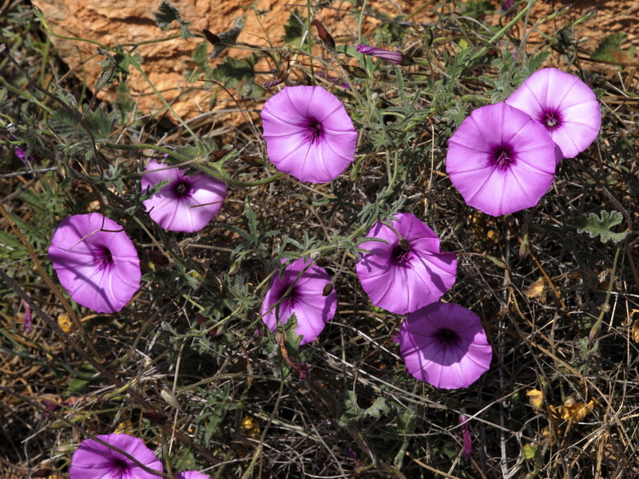

Ayuntamiento de Senés
JARDIN BOTANICO DE ESPECIES AUTOCTONAS DE SENES

Scolymus hispanicus

La carihuela (Scolymus hispanicus), conocida también como tagarnina o cardillo en algunas regiones, es una planta herbácea bienal característica del ecosistema mediterráneo. Destaca por su aspecto espinoso y por su valor como planta comestible.
Presenta tallos erectos y ramificados, con hojas profundamente divididas y provistas de espinas. Sus flores son de color amarillo intenso, agrupadas en capítulos, y aparecen durante la primavera.
La carihuela se distribuye por la región mediterránea, creciendo en terrenos secos, bordes de caminos y campos abandonados. Prefiere suelos pobres y bien drenados.
En el entorno de Senés, es frecuente en zonas abiertas y terrenos agrícolas, formando parte del paisaje tradicional.
La carihuela es una planta comestible, especialmente apreciada por sus tallos tiernos y raíces. Tradicionalmente se ha utilizado en la alimentación por su valor nutritivo.
También se le atribuyen propiedades digestivas y depurativas dentro del conocimiento popular.
La carihuela simboliza la resistencia y el aprovechamiento de los recursos naturales, al crecer en condiciones adversas y ser útil para la alimentación.
Representa la relación entre el ser humano y las plantas silvestres del entorno.
En Senés, la carihuela ha sido utilizada como comida para animales, la de flor blanca se le daba a los cerdos, y la de flor rosa a los conejos.
Las propiedades que se les daba eran pulgantes, diurética y las hojas ablandaban los forúnculos..
Florece principalmente en primavera, produciendo flores amarillas muy visibles en el paisaje.
A pesar de su aspecto espinoso, la carihuela es una planta muy apreciada en la gastronomía tradicional.
Forma parte del grupo de plantas silvestres comestibles del Mediterráneo.